Firefox es el navegador web creado por la Fundación Mozilla. La página web oficial de la Fundación Mozilla es https://www.mozilla.org/es-ES/.
La página web oficial de Firefox en español es https://www.firefox.com/es-ES/. Desde ella se puede descargar un instalador en línea (el instalador es muy pequeño y necesita conectarse a internet para descargar Firefox).
El instalador completo (que no necesita conectarse a Internet para hacer la instalación) se puede descargar con el enlace https://download.mozilla.org/?product=firefox-latest-ssl&os=win64&lang=es-ES.
Existe otra página de descarga, https://www.mozilla.org/en-US/firefox/all/, que ofrece versiones de Firefox para diferentes sistemas operativos e idiomas (por ejemplo, variantes de español para Argentina, Chile, México o España).
En cdlibre.org hay una sección dedicada a navegadores web, con información detallada sobre la última versión publicada.
Nota: Las capturas siguientes corresponden a Firefox 156 en Windows 11 de 64 bits. Versiones posteriores pueden ser ligeramente diferentes.
Haciendo doble clic sobre el instalador de Firefox, se pone en marcha el asistente de instalación.
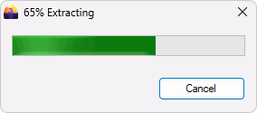
Windows solicita permiso para proceder a la instalación.
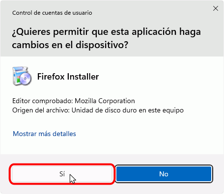
La primera pantalla anuncia que se va a instalar Firefox. Hay que pulsar el botón Siguiente para instalar el programa o el botón Cancelar para no instalarlo.
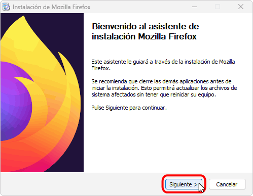
La segunda pantalla permite elegir el tipo de instalación. Para este curso es suficiente elegir la opción Estándar:
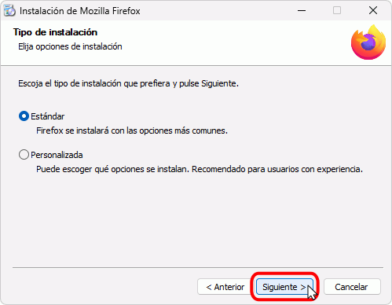
La tercera pantalla permite elegir el directorio de instalación. En principio, si el usuario tiene permisos de Administrador Firefox se instalará en Archivos de programa (en inglés, Program Files). Si no, se instalará en la carpeta del usuario.
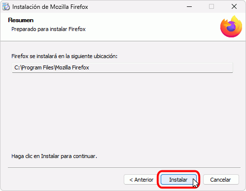
A continuación, se instalará Firefox (la instalación dura unos segundos).
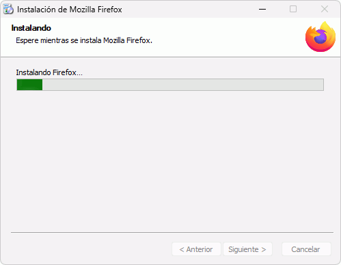
Una vez completada la instalación, se muestra la pantalla final. Si se mantiene marcada la casilla, al hacer clic en Finalizar se abrirá Firefox.
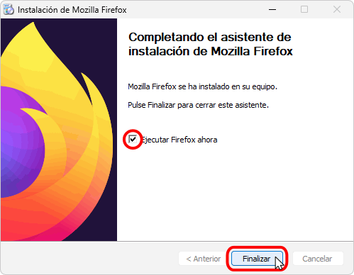
La primera vez que se abre Firefox, se muestra una serie de pantallas de configuración:
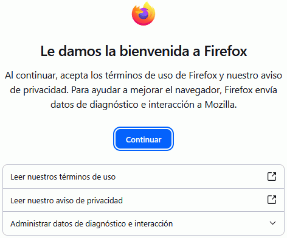
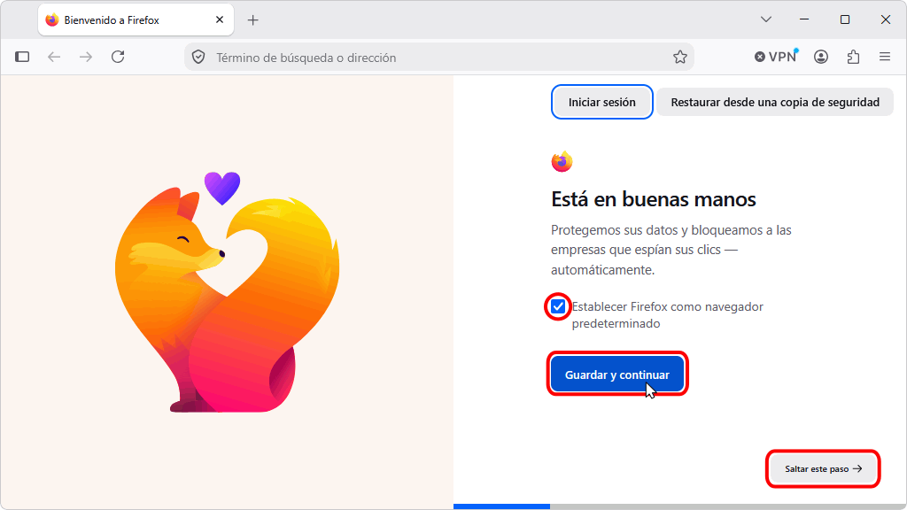
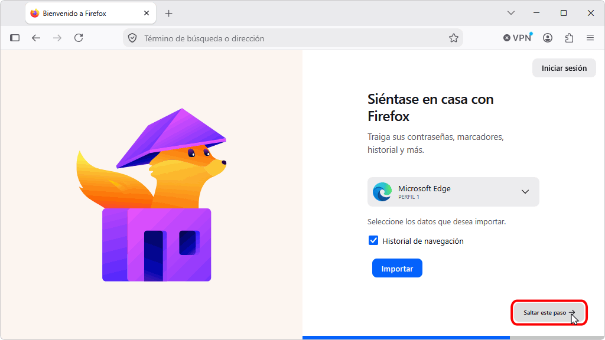
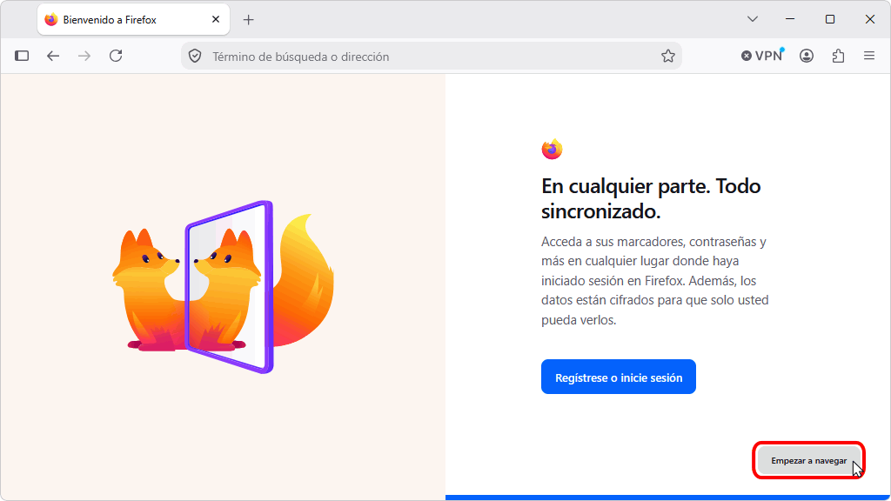
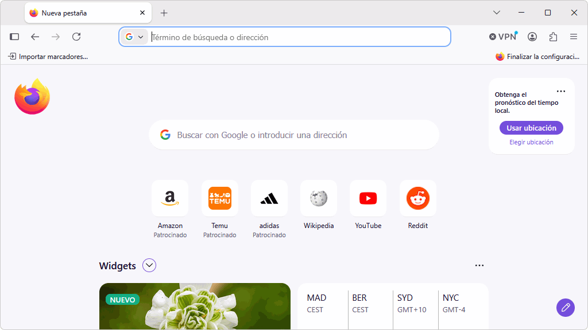
Mientras se recorren estas pantallas de instalación, Firefox muestra un mensaje emergente solicitando añadir un acceso directo a Firefox a la barra de tareas. Si no desea fijarla, haga clic en "No, gracias".
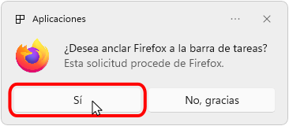
Si se elige configurar Firefox como navegador predeterminado, se mostrarán las ventanas que se comentan en el apartado siguiente.
Firefox ofrece la posibilidad de convertirse en el navegador predeterminado mostrando una ventana emergente en la barra de tareas. Haga clic en cualquier parte de la ventana (menos en el botón Descartar) para iniciar el proceso de configuración. Si este mensaje no se muestra (por haberse ocultado, por ejemplo), para cambiar manualmente el navegador predeterminado, abra en Firefox Ajustes > Inicio > Navegador predeterminado.
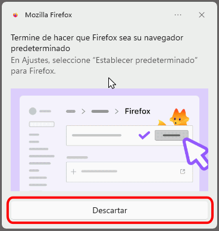
Se mostrará una página de la Configuración de Windows que muestra las aplicaciones configuradas para los distintos tipos de archivos. Haga clic en "Establecer como predeterminado" para cambiar a Firefox:
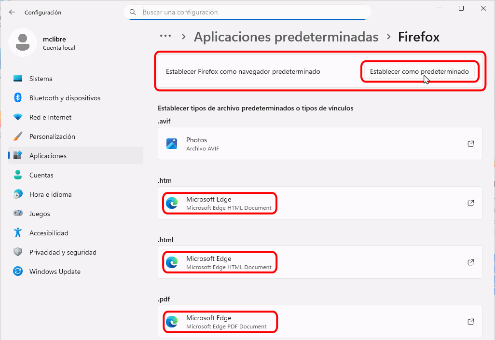
La lista indicará ahora los tipos de archivos asociados a Firefox. Se puede asociar algún otro tipo de archivo (como pdf, por ejemplo).
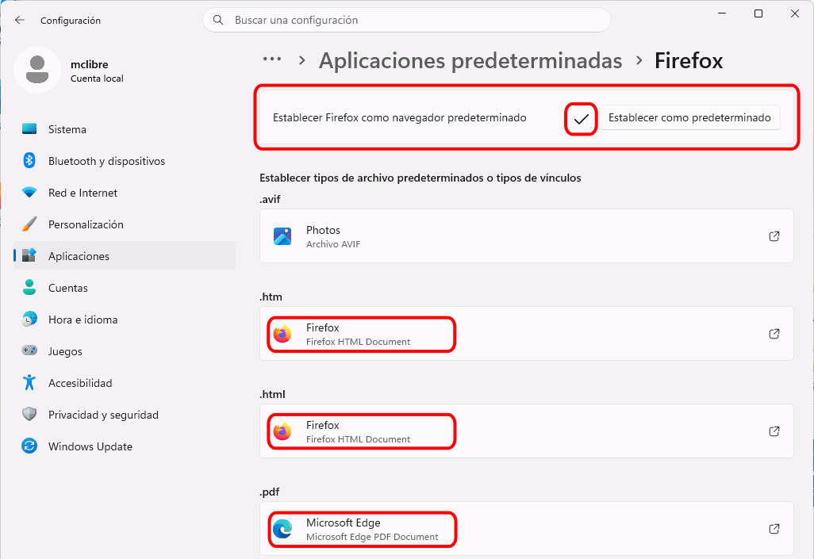